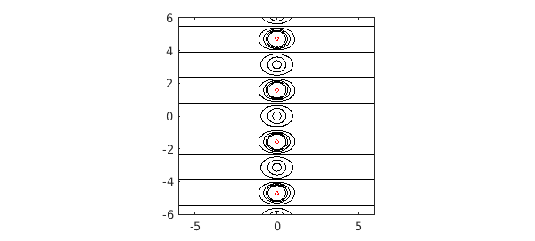
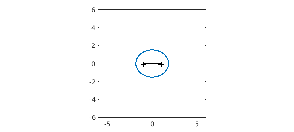
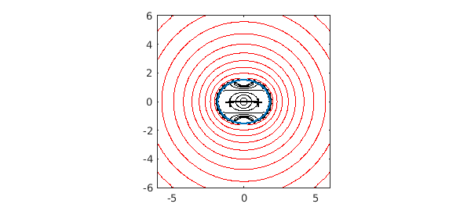
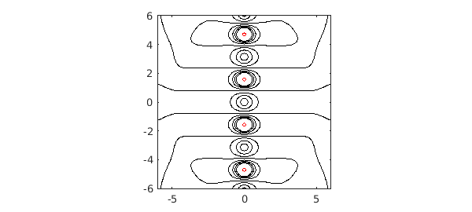

Suppose we have an analytic function on $[-1,1]$, like
f = @(z) tanh(z);
In principle, $f$ can be analytically continued to a larger domain in the complex plane that includes a neighborhood of $[-1,1]$. In practice, computing such an analytic continuation is a notoriously ill-posed problem.
Now of course for this function, we know what the analytic continuation should look like. Here is a picture of level curves of $|f(z)|$ in the complex plane:
x = -6:.05:6; y = -6:.05:6; [xx, yy] = meshgrid(x,y); zz = xx+1i*yy; ff = f(zz); lev1 = .25:.25:2; lev2 = 10.^(1:2:19); hold off, contour(x,y,abs(ff),lev1,'k') hold on, contour(x,y,abs(ff),lev2,'r') axis(6*[-1 1 -1 1]), axis square

How might we calculate some of this structure based on the values of $f$ on $[-1,1]$? One idea would be to use polynomials. The chebfun for $f$ is a polynomial $p$ that matches $f$ to about 16 digits:
z = chebfun('z');
p = f(z);
length(p)
ans =
30
As is discussed in Chapter 8 of [1], one can expect $p$ to approximate $f$ roughly within the Chebfun ellipse for $f$, which is approximately the smallest Bernstein ellipse around $[-1,1]$ passing through a singularity of $f$:
hold off, plotregion(p), axis(6*[-1 1 -1 1]), axis square

To confirm this prediction, here is a contour plot of the absolute value $|p(z)|$ in the complex plane, following Chapter 28 of [1]. Inside the Chebfun ellipse it matches $|\tanh(z)|$ beautifully, but outside it bears no relation. The zeros of $p$ line up along the boundary curve, illustrating a theorem of Walsh discussed in Chapter 18 of [1].
pp = p(zz); hold off, contour(x,y,abs(pp),lev1,'k') hold on, contour(x,y,abs(pp),lev2,'r') plotregion(p), axis(6*[-1 1 -1 1]), axis square

How can we compute $f$ further out in the complex plane? The classic idea is to use rational approximations. Suppose we use the Chebfun ratinterp command to compute a type (7,8) rational approximation to $f$ based on rational interpolation in Chebyshev points in $[-1,1]$:
[p,q,r,mu,nu,poles] = ratinterp(f,7,8); rr = r(zz); hold off, contour(x,y,abs(rr),lev1,'k') hold on, contour(x,y,abs(rr),lev2,'r') axis(6*[-1 1 -1 1]), axis square

The rational function has evidently done a far better job of analytic continuation than the polynomial. (Admittedly, the choice of the parameters (7,8) is something of an art.) Here are the first eight exact poles of $f$ compared with those of $r$:
format long
exact = 0.5i*pi*(-7:2:7)';
disp(' Exact rational approx')
disp([sort(exact) sort(poles)])
Exact rational approx Column 1 0.000000000000000 - 1.570796326794897i 0.000000000000000 + 1.570796326794897i 0.000000000000000 - 4.712388980384690i 0.000000000000000 + 4.712388980384690i 0.000000000000000 - 7.853981633974483i 0.000000000000000 + 7.853981633974483i 0.000000000000000 -10.995574287564276i 0.000000000000000 +10.995574287564276i Column 2 0.000000000000000 - 1.570796321633934i 0.000000000000000 + 1.570796321633934i -0.000000000000000 - 4.706336152552645i -0.000000000000000 + 4.706336152552645i -0.000000000000003 - 7.712081076679963i -0.000000000000003 + 7.712081076679963i 0.000000000000000 -19.750240823907543i 0.000000000000000 +19.750240823907543i
For much more on these matters, see [1], [2] and [3].
References
-
L. N. Trefethen, Approximation Theory and Approximation Practice, SIAM, 2013.
-
M. Webb, Computing complex singularities of differential equations with Chebfun, SIAM Undergraduate Research Online, 2013.
-
M. Webb, L. N. Trefethen, and P. Gonnet, Stability of barycentric interpolation formulas for extrapolation, SIAM J. Sci. Comput. 34 (2012), A3009--A3015.